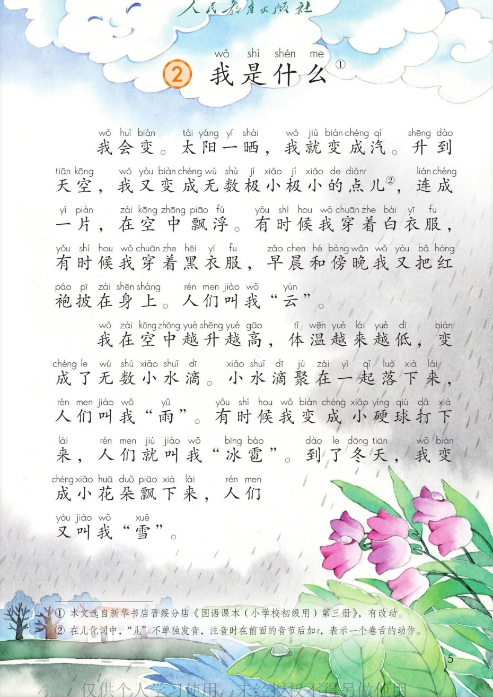
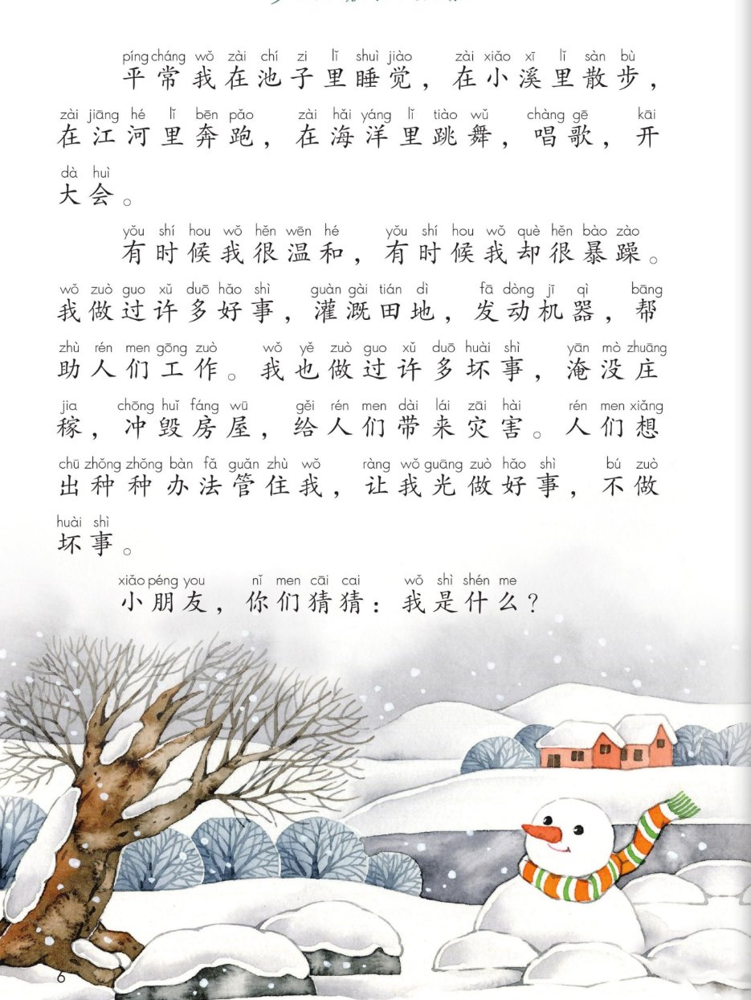
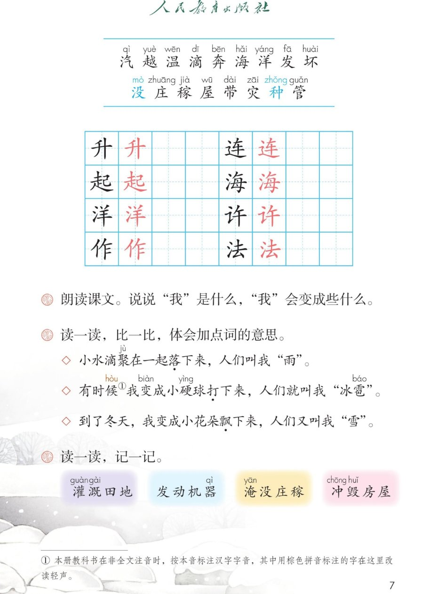

×
🔊 手机听不到声音怎么办？照这 3 步做
① 用
Edge 浏览器打开
www.jeepsh.cn（在微信里打开的点右上角「⋯ → 在浏览器打开」；没装 Edge 就到应用商店搜「Edge」安装）。
② 应用商店搜
「讯飞语记」安装 → 打开它 →
通用设置 → 语音合成设置 → 打开
「合成系统接口」和
「全局生效」两个开关 → 再选一个
中文发音人。
③ 系统语言设为
简体中文，点「
播放」试听能说中文后，
彻底关闭浏览器再重开（后台划掉），回到课件点读就有声音。
→ 打开声音自检
💧 第 2 课《我是什么》· 有声图文带读
统编版语文二年级上册 · 第一单元·阅读 · 课本第 5~7 页 · 课文选自《国语课本（小学校初级用）》第三册，有改动
课文 8 个自然段
会认字 17
会写字 8
听写词 8
近义词 4 组
深入理解 8 题
本课本领 分角色读水的变身
🎧 五步学（可随时点任意一句、一个字、一个词单独听）：
① 听读课文——一句一句读，读到哪一句哪一句发光；开「跟读」后读完一句留时间让你自己读。
② 学字词——17 个会认字、8 个会写字（含书写提示），点一个读一个。
③ 词语·听写·造句——听写 8 个词（读两遍→你写→报答案→听示范句），再听 4 组近义词辨析。
④ 深入理解——8 道题（认知 / 理解 / 运用 / 拓展），开放题答案不唯一，先想后看。
⑤ 讲故事·分角色——按顺序讲水的旅行，再给水的不同变身分角色朗读。
① 听读课文（点哪一句，读哪一句）点段前的序号听整段
注音只标本课要认、要写的字，读音来自课本第 7 页生字表
🎤 朗读要求（老师标准）
① 读准字音，不添字、不漏字、不回读；
② 逗号稍停，句号停得长一点；
③ 这是水娃娃在介绍自己，要读出活泼、神气的语气；
④ 最后“我是什么”是问句，末尾往上扬，像在考大家；
⑤ “温和”读得温柔，“暴躁”读得有力，把两种样子读出来。
①我会变。太阳一晒，我就变成汽。升到天空，我又变成无数极小极小的点儿，连成一片，在空中飘浮。有时候我穿着白衣服，有时候我穿着黑衣服，早晨和傍晚我又把红袍披在身上。人们叫我“云”。
②我在空中越升越高，温度越来越低，变成了无数小水滴。小水滴聚在一起落下来，人们叫我“雨”。有时候我变成小硬球打下来，人们就叫我“冰雹”。到了冬天，我变成小花朵朵飘下来，人们又叫我“雪”。
③平常我在池子里睡觉，在小溪里散步，在江河里奔跑，在海洋里跳舞，唱歌，开大会。
④有时候我很温和，有时候我却很暴躁。
⑤我做过许多好事，灌溉田地，发动机器，帮助人们工作。
⑥我也做过许多坏事，淹没庄稼，冲毁房屋，给人们带来灾害。
⑦人们想出种种办法管住我，让我光做好事，不做坏事。
⑧小朋友，你们猜猜：我是什么？
🤔 想一想（点我可跳过）
课本的样子（点一张图，听读这一页）整页点读

第 5 页 · 课题与课文前半

第 6 页 · 课文后半

第 7 页 · 生字与课后题
📖 人教版《语文》二年级上册 · 课本第 5~7 页 · 图片仅供个人学习，版权归人民教育出版社所有
📝 课本上的小知识（第 5 页注释照录）：① 本文选自新华书店晋绥分店《国语课本（小学校初级用）》第三册，有改动。② 在儿化词中，“儿”不单独发音，注音时在前面的音节后加 r，表示一个卷舌的动作。
② 会认字（17 个）点一个字，听读音、词语和课文里的句子
② 会写字（8 个）结构、部首、笔画与书写提示为通用规范，供参考，以教材和老师的指导为准
升
shēng
上升 · 升旗
4 画 · 独体
撇短横长，竖要站稳
起
qǐ
起来 · 起床
10 画 · 半包围（走）
走字旁捺要长，托住己
洋
yáng
海洋 · 大洋
9 画 · 左右（氵）
左窄右宽，三点水成弧
作
zuò
工作 · 作业
7 画 · 左右（亻）
左窄右宽，横间距均匀
连
lián
连成 · 连长
7 画 · 半包围（辶）
走之底捺要长，车居中
海
hǎi
海洋 · 大海
10 画 · 左右（氵）
左窄右宽，每字舒展
许
xǔ
许多 · 许可
6 画 · 左右（讠）
左窄右宽，点要靠上
法
fǎ
办法 · 法律
8 画 · 左右（氵）
左窄右宽，去字紧凑
③ 读一读，记一记（课后题照录）点一行，听读这一组词语
灌溉灌溉田地
发动发动机器
淹没淹没庄稼
冲毁冲毁房屋
📝 课后题（照录）：① 朗读课文。说说“我”是什么，“我”会变成些什么。② 读一读，比一比，体会“落下来 / 打下来 / 飘下来”的不同（见下面的深入理解第 4 题）。③ 读一读，记一记（上面四组词语）。
③ 听写（8 个词）读两遍 → 你在纸上写 → 报答案 → 听示范句
准备听写 · 共 8 个词
○ ○ ○
点下面的「开始听写」，听到一个词就写一个词。
③ 听写的词 · 造句示范点词听读，点句子听示范句，再自己说一句
1灌溉田地课后词语
示范句：农民伯伯用水灌溉田地。
✏️ 我也能说：谁 + 用什么 + 灌溉什么
2发动机器课后词语
示范句：工人叔叔发动机器开始生产。
✏️ 我也能说：谁 + 发动什么
3淹没庄稼课后词语
示范句：大雨淹没了田里的庄稼。
✏️ 我也能说：什么 + 淹没了什么
4冲毁房屋课后词语
示范句：洪水冲毁了村民的房屋。
✏️ 我也能说：什么 + 冲毁了什么
5办法会写字
示范句：我终于想出了一个好办法。
✏️ 我也能说：谁 + 有了什么办法
6海洋会写字
示范句：小溪的水最后流进了广阔的海洋。
✏️ 我也能说：什么 + 在什么里
7许多会写字
示范句：我有许多好看的故事书。
✏️ 我也能说：谁 + 有什么
8工作会写字
示范句：爸爸每天认真工作。
✏️ 我也能说：谁 + 怎样地工作
③ 近义词辨析（4 组）相同点 / 不一样在哪 / 各造一句
温和 — 温柔
相同：都表示态度好、不凶、让人舒服。
不一样：温和常说天气不冷不热，或性情平和（课文“我很温和”）；温柔多形容人的动作、说话轻柔。
温和：今天天气很温和，出去玩正合适。
温柔：妈妈温柔地对我说，别害怕。
平常 — 平时
相同：都表示一般情况下、日常的时候。
不一样：平常还能当形容词，说一件普通的事；平时多作时间词，常放在句子前面。
平常：星期天和往常一样，平平常常。
平时：我平时最喜欢画画。
许多 — 很多
相同：都表示数量大、不少。
不一样：许多更书面，常写进句子；很多更口语，说话时更常用。
许多：树上结了许多红果子。
很多：公园里有很多小朋友在玩耍。
办法 — 方法
相同：都表示解决问题的法子、路子。
不一样：办法更口语、更日常；方法更书面，常用于学习、工作。
办法：我想到一个好办法。
方法：老师教我们学习的好方法。
③ 词语拓展（说一说，记一记）
数量词一滴水 一片云 一场雨 一朵雪花 一颗冰雹
越…越…越升越高 越来越低 越来越好
动作词飘浮 睡觉 散步 奔跑 跳舞 唱歌
反义词温和—暴躁 好—坏 升—落
④ 深入理解（8 题 · 先想后看）标「答案不唯一」的题，说得有道理都对
认知这篇课文里的“我”到底是什么？
看解析
🤔 想一想
解析：
“我”就是水。课文开头说“我会变”，最后又问“我是什么”，整篇都在讲水的各种样子。
💡 读这种第一人称的课文，先猜一猜“我”是谁，再去找证据
认知“我”会变成些什么？
看解析
🤔 想一想
解析：
会变成：汽 → 云 → 雨 → 冰雹 → 雪。
课文说：太阳一晒变汽，升到天空变云，落下来是雨，硬球打下来是冰雹，冬天飘下来是雪。
💡 把变身的先后顺序排一排，就清楚“我”会变的样子了
理解课文说“有时候我穿着白衣服，有时候我穿着黑衣服，早晨和傍晚我又把红袍披在身上”，这说的是什么？
看解析
🤔 想一想
解析：
白衣服：白天晴好时的白云。
黑衣服：快下雨时的乌云。
红袍：早晨和傍晚，阳光斜照，云被染成红色，就是朝霞和晚霞。
💡 把云的颜色和天气、时间连起来想，就懂了
理解课文写雨用“落下来”，冰雹用“打下来”，雪用“飘下来”，这三个词能调换吗？为什么？
看解析
🤔 想一想
解析（说出一点就很好）：
落：雨是一滴一滴轻轻掉下来，用“落”。
打：冰雹是小硬球，又重又硬，重重砸下来，用“打”。
飘：雪花很轻，慢慢悠悠掉下来，用“飘”。
🌈 答案不唯一，能说出三个词的不同就很好
理解“我”做过哪些好事，又做过哪些坏事？
看解析
🤔 想一想
解析：
好事：灌溉田地，发动机器，帮助人们工作。
坏事：淹没庄稼，冲毁房屋，给人们带来灾害。
💡 同一样东西，用好了是帮手，没管好会成灾害
运用用“在……在……在……在……”说说“我”在不同地方做什么。
看解析
🤔 想一想
参考答案（直接照课文说也可）：
在池子里睡觉，在小溪里散步，在江河里奔跑，在海洋里跳舞、唱歌、开大会。
💡 四个“在……”把水在不同地方的样子连起来，像一幅画
🌈 答案不唯一，把四个地方和动作说清楚就很好
运用从“温和”和“暴躁”中任选一个，或者照样子用“有时候……有时候……”说一句话。
看解析
🤔 想一想
参考答案（二选一即可）：
温和：今天天气很温和，出去玩正合适。
暴躁：弟弟得不到玩具，就暴躁地跺起脚来。
有时候……有时候……：有时候我很高兴，有时候我却很生气。
🌈 答案不唯一，句子完整通顺就好
拓展人们想出种种办法管住“我”，你知道人们用什么办法让水多做好事、少做坏事吗？
看解析
🤔 想一想
参考答案（三种思路，任选一种）：
蓄水：修水库把水存起来，干旱时放出来浇地。
防洪：修堤坝、加固河岸，不让水冲毁房屋。
保水：在山上种树，让雨水慢慢流、少发洪水。
🌈 答案不唯一，能说出一种办法并讲清为什么就很好
⑤ 按顺序讲故事（水的旅行）
💬 讲故事支架：先晒成汽升天 → 再连成片变云 → 接着落下来变雨、冰雹、雪 → 然后在池溪江河海里活动 → 最后人们想办法管住它。
⑤ 分角色朗读（水的变身）点一个角色，听它说的话（台词都来自课文原句）
💧 水娃娃（主人公）
“我会变……小朋友，你们猜猜，我是什么？”
💬 要读出活泼、神气的语气，像在介绍自己
☁️ 云
“人们叫我云。”
💬 要读出漂亮、得意的语气
🌧️ 雨
“小水滴聚在一起落下来，人们叫我雨。”
💬 要读出轻轻、沙沙的语气
🧊 冰雹
“有时候我变成小硬球打下来，人们就叫我冰雹。”
💬 要读出又重又急的语气
❄️ 雪
“到了冬天，我变成小花朵朵飘下来，人们又叫我雪。”
💬 要读出轻轻、柔柔的语气